Dokumentation
Stakeholder
Ein umfassender Überblick über die Stakeholder des Systems ist von entscheidender Bedeutung. Dies bezieht sich auf sämtliche Personen, Rollen oder Organisationen, die entweder die Architektur des Systems kennen sollten oder von dieser überzeugt werden müssen. Zu den Stakeholdern zählen auch jene, die aktiv mit der Architektur oder dem Code arbeiten, beispielsweise indem sie Schnittstellen nutzen. Ebenso gehören Personen dazu, die die Dokumentation der Architektur benötigen, um ihre eigene Arbeit effizient zu gestalten. Darüber hinaus sind Stakeholder involviert, die Entscheidungen über das System und dessen Entwicklung treffen. Die nachfolgende Analyse zeigt alle Stakeholder gebündelt in ihren Gewichtungen und Beziehungen.
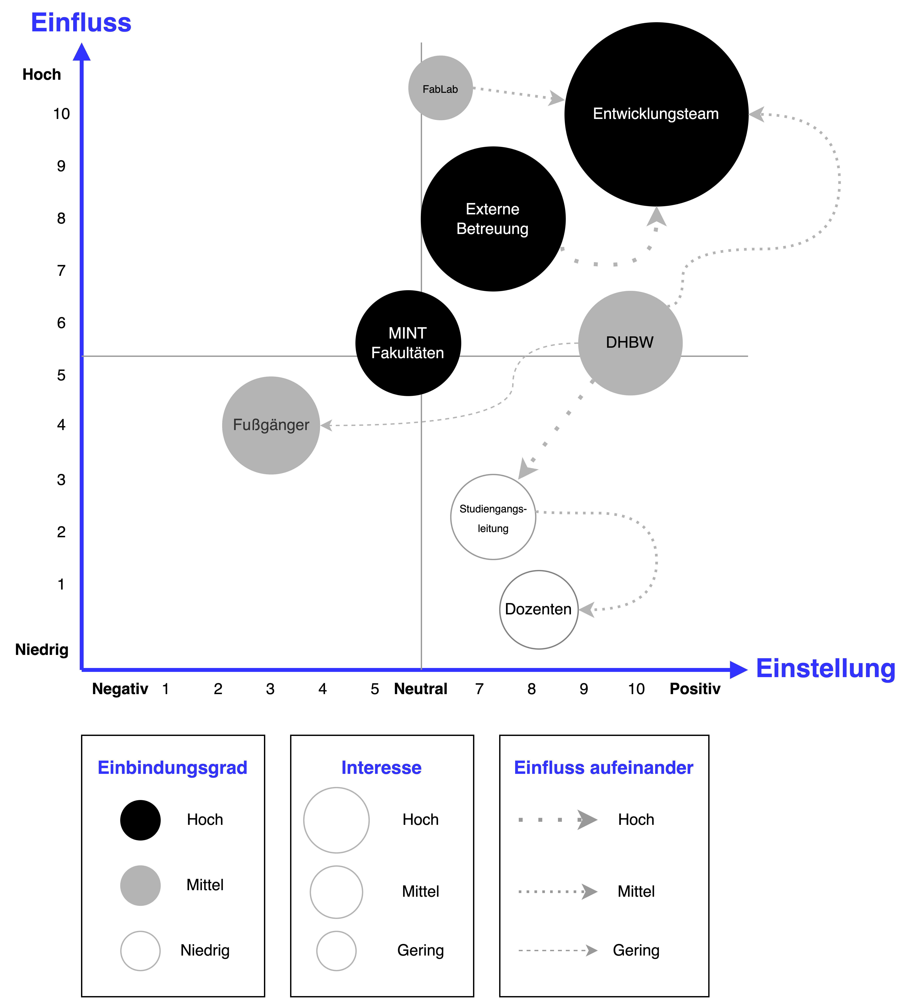
Stakeholder Analyse und Zusammenfassung in den Unterscheidungen: Einbindungsgrad, Interesse und Einflüsse. Das Entwicklungsteam geht deutlich als am stärksten partizipativ gekennzeichneten Stakeholder hevor. Am repressivsten zeigen sich die Stakeholder in Form der Fußgänger.
Anforderungskonzept
Die Anforderungen an die Umsetzung des Blickbox-Projekts werden in die Kategorien funktionale, nicht funktionale und hypothetische Anforderungen unterteilt. Diese Differenzierung ermöglicht eine umfassende Abdeckung aller Aufgabenstellungen im Zusammenhang mit der Umsetzung des Blickbox-Projekts.
Funktionale Anforderungen (FA)
Funktionale Anforderungen beschreiben spezifisch die konkreten Zwecke, die das zu entwickelnde Produkt erfüllen soll.
Nicht funktionale Anforderungen (NFA)
Im Gegensatz zu funktionalen Anforderungen sind nicht-funktionale Anforderungen eher allgemein gehalten und betreffen die gesamte Architektur und das Design des Produkts. Sie können auf verschiedene Projekte angewendet werden.
| Anforderung | Beschreibung |
|---|---|
| Datenerfassung und -übertragung (FA1) | Das IOT-System muss in der Lage sein, kontinuierlich Sensordaten zu erfassen. Diese Daten sollen in der Sensoreinheit eingelesen, an den Raspberry Pi geschickt, dort gespeichert und verarbeitet werden. Die Datenübertragungen erfolgen Event-gesteuert und drahtlos. Von der Sensoreinheit erfolgt die Übertragung über Bluetooth und zum Server über einen http-Client. Die Daten werden in festgelegten Intervallen im JSON-Format an den Server übertragen und in der Datenbank festgehalten |
| Interaktivität zu Dritten (FA2) | Die Blickbox soll attraktiver werden und Fußgänger sollen mit ihm interagieren können. Das soll in Form eines Displays oder Ton und Licht geschehen. Ein Display soll in der Lage sein, Dritten aktuelle Daten aus der Datenbank wie etwa das Wetter anzuzeigen. Bei Dunkelheit sollen Bewegungsmelder Lichter aktivieren. |
| Containerisierung (FA3) | Die Serveranwendungen sollen in Containern gekapselt werden, um eine verbesserte Portabilität und Skalierbarkeit zu gewährleisten. Es wird die Container-Technologien Docker verwendet werden, um die Anwendungen effizient zu verwalten und zu deployen. |
| Erweiterbarkeit und Wartung (NF1) | Die Architektur und Dokumentation des Systems sollen leicht zugänglich sein, um Erweiterungen und Verbesserungen der Features zu erleichtern. Eine klare Dokumentation sowie ein vereinfachter Hardwareaufbau sollen die Wartung und Erweiterbarkeit des Systems unterstützen. |
| Sicherheit (NF2) | Die Verbindung zum Server soll verschlüsselt sein, um die Sicherheit der übertragenen Daten zu gewährleisten. Es müssen geeignete Verschlüsselungsprotokolle und Sicherheitsmaßnahmen implementiert werden, um die Vertraulichkeit und Integrität der Daten zu schützen. |
| Datenwiederherstellung und -erhaltung (NF3) | Ein Standardprogramm auf dem Raspberry Pi soll die kontinuierliche Sicherung der Daten gewährleisten, um die ungestörte Funktionalität der Blickbox zu sichern. Die Daten puffern wir auf dem Pi, damit die Datenbank nur zur Darstellung in Grafana existiert. Die Daten sollen dazu auf dem Raspberry Pi in einer Datei gespeichert werden. Das Risiko des Verlierens der zeitabhängigen Daten soll so minimiert werden. |
| Bereitstellung einer geeigneten Umgebung (NF4) | Die Hardware muss sowohl innerhalb als auch außerhalb der Blickbox an trockenen und sicheren Orten platziert werden. Es sollen wetterfeste und isolierte Boxen verwendet werden, um die Hardware vor Umwelteinflüssen zu schützen und ihre Langlebigkeit zu unterstützen. |
| Bereitstellung eines Dashboards (NF5) | Die Daten der Datenbank sollen mit Grafana grafisch dargestellt werden. Auf dem Dashboard sollen die Grafana-Grafen visualisiert werden und den Verbindungsstatus zur Datenbank sowie zur Blickbox angegeben werden. Es soll nutzerfreundlich sein, um die Datenvisualisierung für Benutzer intuitiv zugänglich zu machen. |
Randbedingungen
Technisch
| Randbedingungen | Beschreibung |
|---|---|
| Datenbank | Zur Datenbankpersistenz wird eine NoSQL-Datenbank wie InfluxDB verwendet. |
| Datenübertragung | Die Wetterstation wird über das Internet (WLAN) mit einer API kommunizieren. |
| Aufteilung | Frontend und Backend werden strikt getrennt. |
| Fremdsoftware | Open Source Bibliotheken dürfen verwendet werden. |
| Wasserfestigkeit | Jegliche Hardware muss Wasserfest installiert werden. |
Organisatorisch
| Randbedingungen | Beschreibung |
|---|---|
| Team | Vivian Berger, Maylis Grune, Max Müller und Aron Seidl. |
| Zeitplan | Der Zeitplan wird auf 2 Monate vom 01.02.2024 - 28.03.2024 und 2 Monate von 09.08.2024 - 24.09.2024 festgelegt. |
| Projektmanagement | Die Entwicklung folgt dem Scrum-Framework mit zweiwöchigen Sprints. |
| Definition of Done | Entwickler folgen der DoD auf dem Git-Repository. |
Kontextabgrenzung
Fachlicher Kontext
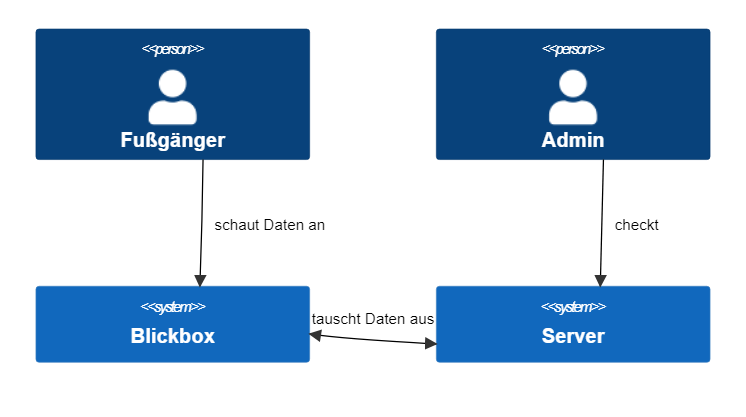
Das -Modell bietet eine strukturierte Methode zur Visualisierung und Kommunikation von Softwarearchitektur, wobei der Fachkontext eine wichtige Rolle spielt. Die Kernkonzepte des Domänenwissens und die Interaktionen mit den technischen Komponenten mit den Akteuren wird beschrieben. Durch die Integration des Fachkontexts in das -Modell können Architekten und Entwickler eine ganzheitliche Sicht auf das System erhalten und die Umsetzung von Anforderungen in eine entsprechende technische Architektur erleichtern.
| Knoten | Beschreibung |
|---|---|
| Fußgänger | Fußgänger die sich die Blickbox anschauen und die Daten sehen. |
| Admin | Administriert Dashboards und steuert Blickbox manuell. |
| Blickbox | Enthält Sensor Hardware und Anzeige der Daten. |
| Server | Externer Server der mit der Hardware der Blickbox kommuniziert. |
Technischer Kontext
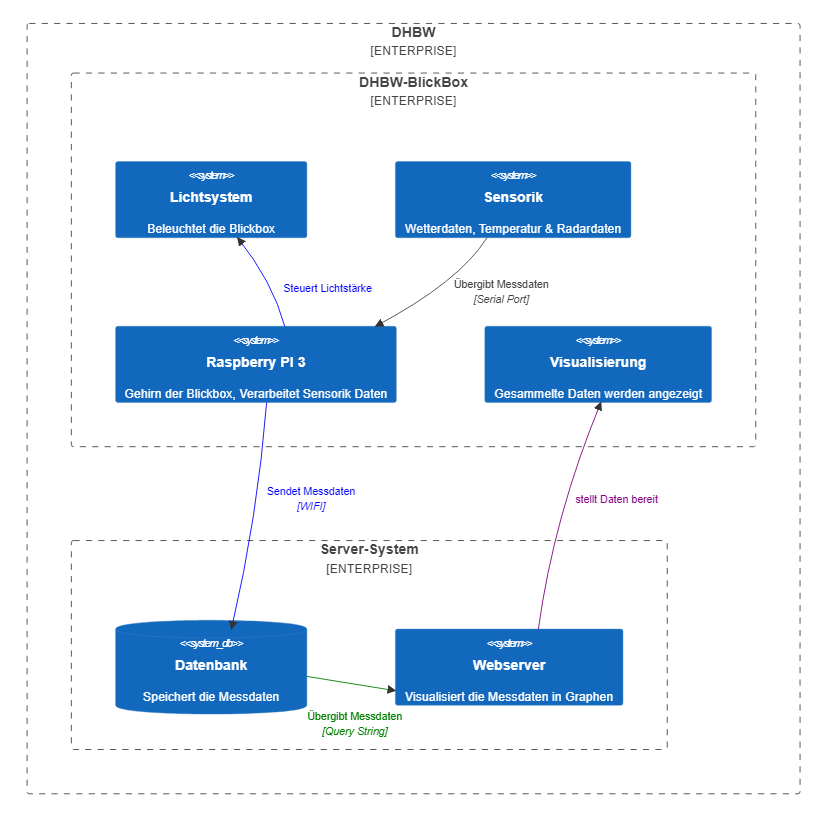
Im -Modell repräsentiert der technische Kontext die Ebene der technischen Details und Infrastruktur, die für die Implementierung und Bereitstellung der Softwareanwendung relevant sind. Dies umfasst Aspekte wie die Auswahl der Programmiersprachen, Frameworks, Datenbanken, APIs und anderen technischen Komponenten, die für die Realisierung der Systemarchitektur erforderlich sind. Eine klare Darstellung des technischen Kontexts im -Modell ermöglicht es den Entwicklern, die Abhängigkeiten und Interaktionen zwischen den technischen Komponenten zu verstehen und erleichtert die Kommunikation und Zusammenarbeit während des Entwicklungsprozesses.
| Knoten | Beschreibung |
|---|---|
| Lichtsystem | Beleuchtet die Blickbox. |
| Sensorik | Hardware, welche die Messdaten sammelt. |
| RaspberryPI | Verarbeitet die Sensorik Daten und schickt diese an die Datenbank. |
| Visualisierung | Gesammelte Daten werden angezeigt. |
| Datenbank | Speichert die Messdaten. |
| Webserver | Visualisiert die Messdaten und Stellt Frontend bereit. |
Lösungsstrategie
| Ziel/Requirement | Lösungsstrategie | Details |
|---|---|---|
| Alle funktionalen Requirements | Eventgesteuerte Architektur | Sensorarchitektur sendet die Messdaten an dem PI. Der PI sendet die Daten an den Webserver über das Internet, da LoraWan ineffizient ist. Der Webserver speichert diese ab und stellt diese im Frontend da. |
| Erweiterbarkeit & Wartung | Modularer Projektaufbau und Tests | Damit Dritte (Stakeholder, neue Entwickler, etc.), sich in das Projekt leicht einarbeiten können: Codekomponenten sind voneinander getrennt aufgebaut. Sie befinden sich in Modulen. Zudem sind Funktionen getestet. |
| Sicherheit | Https-Verbindung, Containerisierung & Reverse-Proxy | Über den Reverse-Proxy sind die Verschiedenen Server-Apps nicht direkt dem Internet Exposed. Durch die Containerisierung können die Komponenten innerhalb des Containers kommunizieren. Die verschiedenen Ports können also verschlossen sein. |
| Wiederherstellung und -erhaltung der Daten | Auf dem Pi werden in einer history file, die daten abgelegt, damit man sollte die verbindung abbrechen, die noch seperat auf dem Pi sind. | |
| Bereitstellung einer geeigneten Umgebung für die Hardware | Box | SARA wird in einer Box einbaut, welche Wasserdicht ist. Durch eine eigene Batterie ist sie Autak und braucht keine Spannung von außen. Die Sensoren werden über Kabelverschraubung in den Innenraum der Box gebraucht dadurch ist sie Wasserdicht. |
| Bereitstellung eines Dashboard | Grafana als Open-Source Fertiglösung | Das erlaubt eine einfache Darstellung der Messdaten mit direkter Datenbank-anbindung, sowie eine einfache Verknüpfung mit dem Frontend. |
Bausteinsicht
Native React App
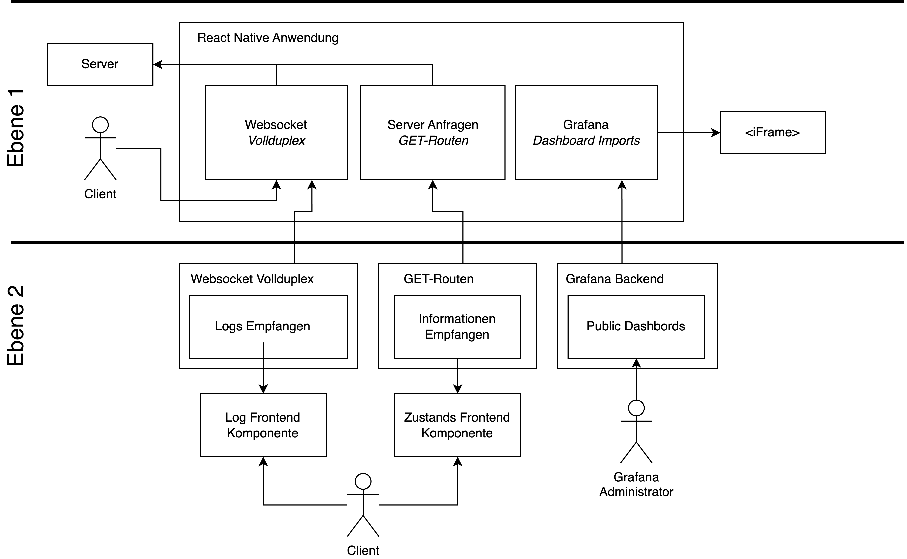
Die Bausteinsicht des -Modells für eine React-App umfasst die verschiedenen Komponenten und ihre Beziehungen innerhalb der Anwendung.
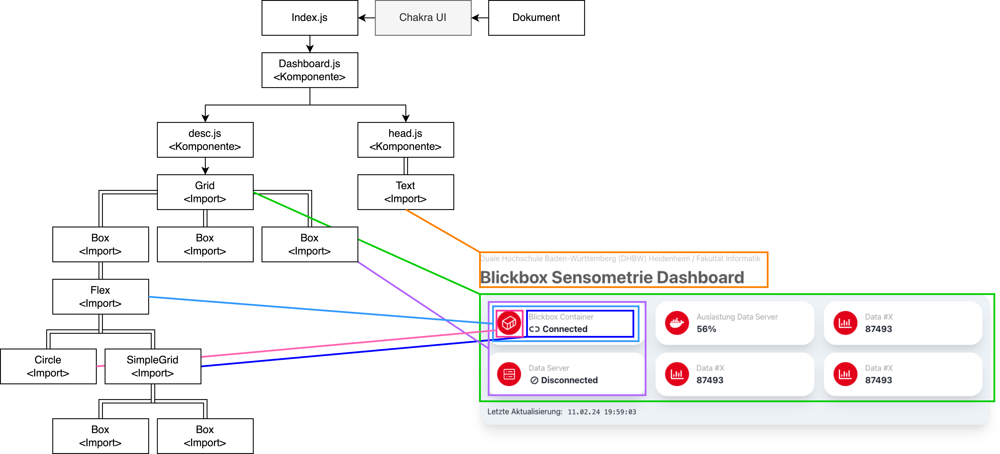
Ein Komponentendiagramm für das React-Frontend einer Softwareanwendung bietet eine detaillierte Darstellung der verschiedenen Elemente, aus denen die Benutzeroberfläche besteht, sowie deren Beziehungen zueinander. Die Komponenten werden hierarchisch erfasst.
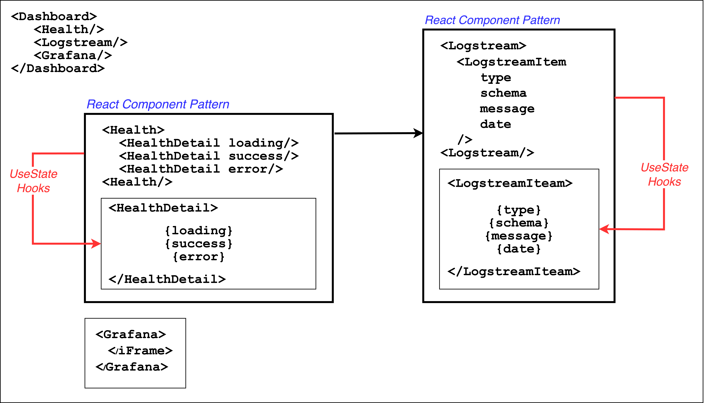
Ein Diagramm für React-Patterns könnte die Darstellung gängiger Muster wie Container-Komponenten zur Datenverwaltung, Präsentationskomponenten für rein visuelle Darstellungen und Higher-Order Components (HOCs) zur gemeinsamen Funktionalitätsweitergabe enthalten. Zusätzlich könnten Render Props, Context-API und Hooks als weitere Muster dargestellt werden, um den Austausch von Daten und Funktionalitäten zwischen Komponenten zu erleichtern. Das Diagramm würde die Beziehungen zwischen diesen Patterns veranschaulichen und ihre Verwendung zur Lösung spezifischer Probleme in React-Anwendungen verdeutlichen.
Raspberry Pi
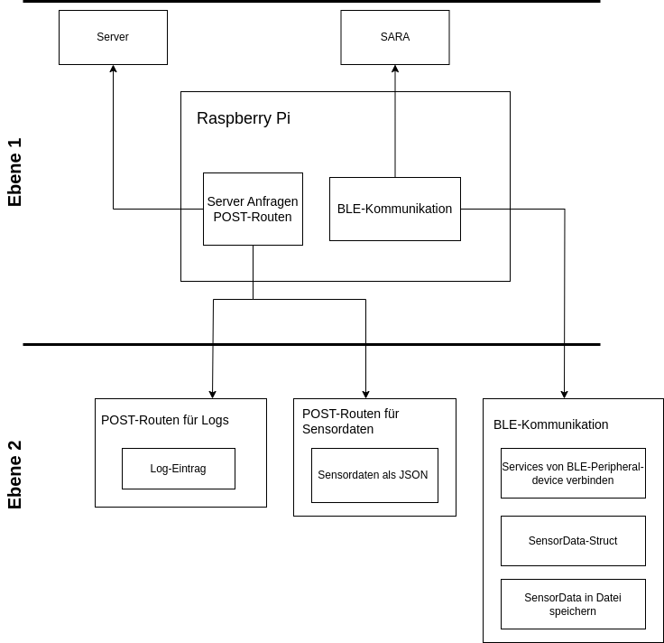
Die Bausteinsicht des -Modells für die ADA-Anwendung auf dem Raspberry Pi stellt auf Ebene 1 die Kommunikation mit dem Server und SARA dar. Auf Ebene 2 werden die einzelnen Komponenten weiter in ihre Bestandteile unterteilt.
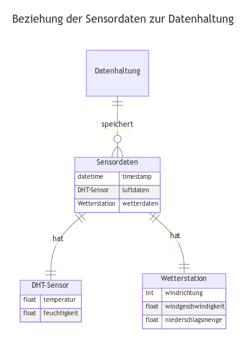
Die Datenhaltung der Sensordaten wird in einem Entity-Relationship-Diagramm dargestellt. Der logische Aufbau der verschiedenen Sensordaten wird in Verbindung mit der Speicherung angegeben.
Sensorik

Beschreibt die Bausteinsicht der Sensorik. Dabei wird in Ebene 1 zwischen der Bluetooth Low Energy Kommunikation, der Daten Acquisition und der seriellen Kommunikation unterschieden. Die BLE Kommunikation steht als kabellose Schnittstelle für ein Edge Device zur Verfügung, da keine Kabelverbindung möglich ist. Die Serielle Kommunikation wird für die Anwendungsentwicklung, als auch für das Debugging verwendet. Die Datenacquisition nutzt Bibliotheken, um auf die General Purpose Input/Output und den analogen Schnittstellen die Sensordaten zu erfassen. Der Batteriemanager auf der Ebene 2 liest die Batterie aus und steuert Energiesparmaßnahmen. Die DHT 22 API greift über das OneWire Protokoll auf die Daten des DHT Temperatur- und Luftfeutigkeitssensors zu, während die SparkFun Weather Meter API Daten der Wetterstation hält. Diese löst je nach Umweltgegebenheiten ein Interrupt aus, welcher die Daten innerhalb der API verändert.
Server
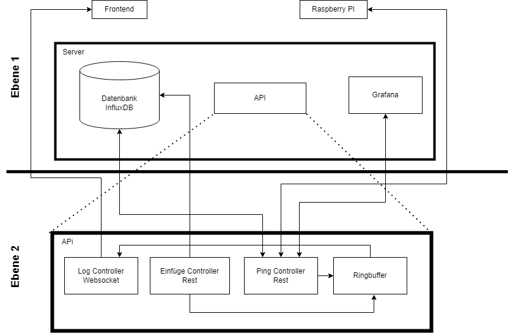
Die Bausteinsicht im -Modell für den Server bietet eine strukturierte Darstellung der verschiedenen Bausteine und deren Beziehungen innerhalb der Serverarchitektur. Sie umfasst typischerweise Komponenten wie Datenbanken, APIs, Services und externe Schnittstellen, um die Funktionalität und Struktur des Serversystems zu veranschaulichen.
Laufzeitsicht
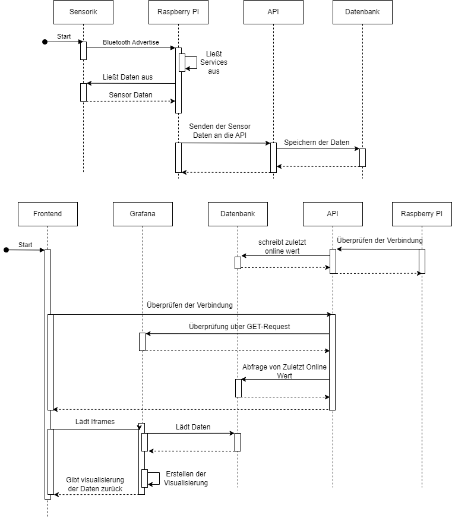
Oben Laufzeitsicht aus der Sicht der Sensorik, unten aus der Sicht des Frontends. Wird die Sensorik aktiv, adversioniert diese ihre Bluetooth Services, die von anderen Geräten wahrgenommen werden können. Der Raspberry Pi liest die BLE Services aus. Wenn die Bluetooth Services die richtigen Identifikationsnummern haben werden die Charakteristiken, welche von diesen Services gehalten werden abgefragt. Die Charakteristiken enthalten hierbei die Sensor- und Statusdaten der Wetterstation. Nachdem die Daten von der Sensorik empfangen wurden, werden sie an eine API gesendet, welche die erhaltenen Daten in der Datenbank speichert. Öffnet ein Nutzer die Frontend-App, frägt diese zuerst die \"Health\" Daten der Systeme ab. Diese werden vom Health Controller innhalb der API verwaltet. Der Raspberry PI übermittelt beim Start eine online Mitteilung an die API. Anschließend werden die eingebetteten iframes von Grafana geladen. Grafana lädt hierfür die Daten aus der Datenbank, erstellt eine Virtualisierung und stellt diese dar.
Verteilungssicht
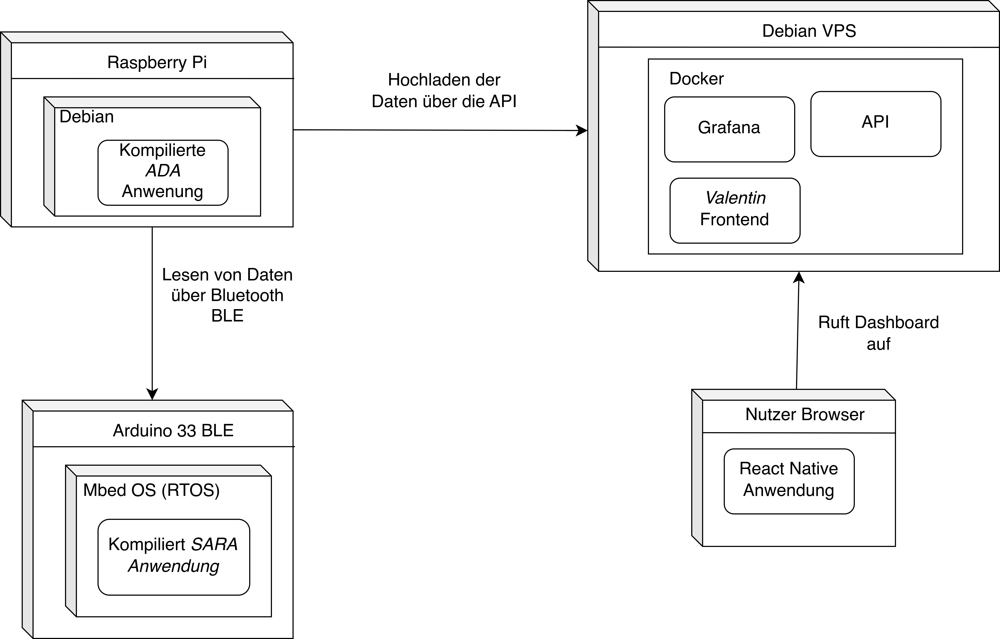
Zeigt die Verteilung der einzelnen Komponenten. Der Nutzer interagiert hier mit dem Valentin Frontend, welches auf einem Debian Server gehostet wird. Der Raspberry Pi ist für die Sensordaten zuständig und sendet diese an den Server. Die Sensork nutzt den Arduino 33 BLE als Hardware Plattform und Sensoren für die Acquisition der Daten. Der Raspberry Pi kann die Daten über Bluetooth BLE abrufen. Die Anwendungen werden auf dem Server mithilfe von Docker werden die Anwendungen virtualisiert.
Architekturentscheidungen
Evaluation zur Wahl des Frontend-Frameworks des Clients
Der Client zur Anzeige und Aufbereitung der Sensordaten wird unter dem Arbeitstitel Valentin (Komposita aus Value und Notification) geführt. Vor der Initialisierung von Valentin muss ein geeignetes Framework gewählt werden. Die nachfolgende Nutzwertanalyse dient dafür als Entscheidungsgrundlage.
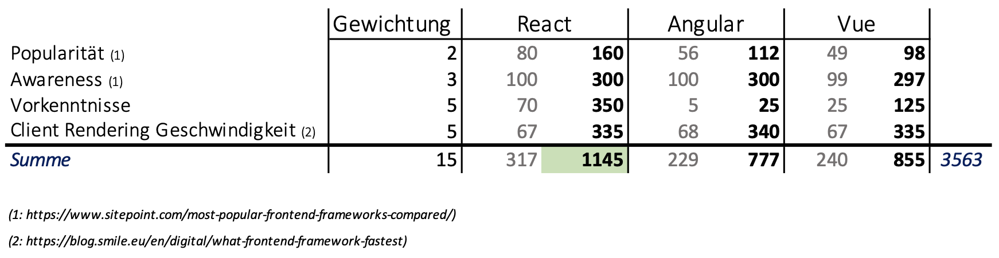
Nutzwertanalyse zur Entscheidung eines geeigneten Frameworks gemessen an der Popularität, der Entwickler Awareness (Welches Framework enthält welchen Support), den Vorkenntnissen des Entwicklungsteams und der Rendergeschwindigkeit auf den Systemen der Clients.
Die Auswahl zum Framework innerhalb des Valentin Client Aufbaus viel auf React. React ist eine JavaScript-Bibliothek von Facebook für die Entwicklung von interaktiven, komponentenbasierten Benutzeroberflächen. Sie ermöglicht eine effiziente Aktualisierung des DOM und eine verbesserte Leistung durch die Verwendung einer virtuellen DOM-Repräsentation.
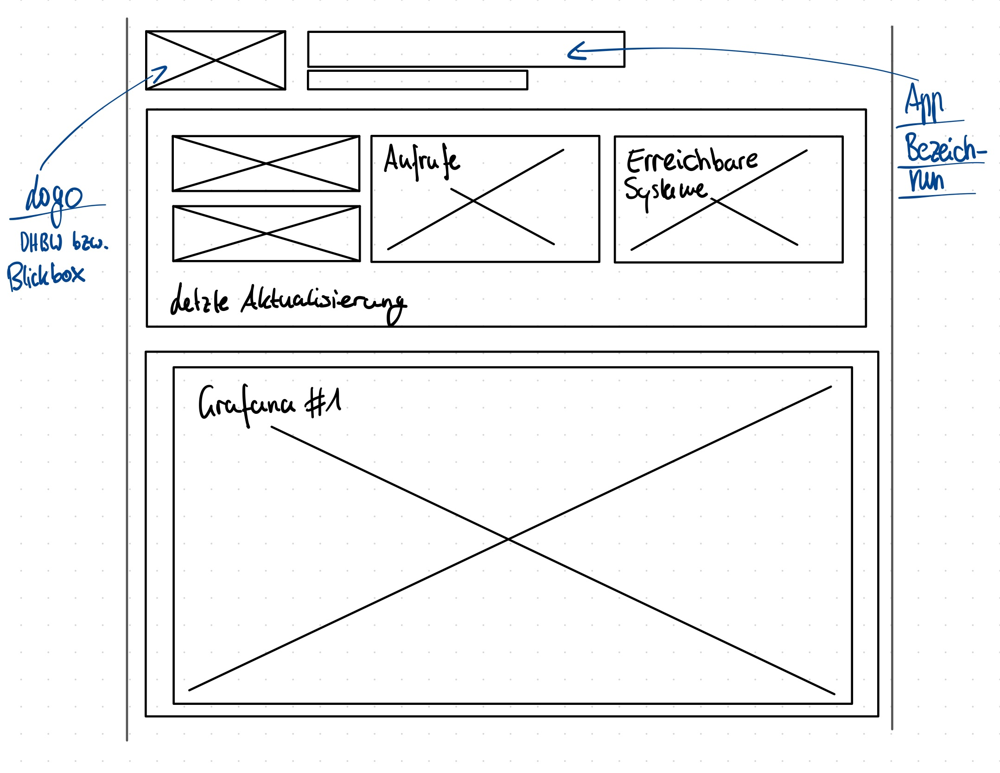
Ein Frontend-Mockup wurde konzipiert, um eine grobe Planung des Dashboards zu ermöglichen. Das Mockup wurde mittels manueller Zeichnung erstellt und in den Entwicklungsprozess integriert, um die Positionierung der einzelnen Komponenten zu beschreiben. Das erstellte Mockup fungiert als visuelle Darstellung, die es ermöglicht, die Platzierung und Interaktion der verschiedenen Komponenten innerhalb des Dashboards zu skizzieren, um eine klare Vorstellung von der späteren Anordnung zu vermitteln.
Evaluation zur Wahl des Technologie-Stacks der Hardware
Die Hardware zur Sensordatenauslesung und Weiterleitung wird unter dem Arbeitstitel SARA (Sensor Appliance and Remote Analysis) und ADA (Automatic Digital Aggregator) geführt. Vor der Implementierung von SARA und ADA muss ein geeigneter Hardwarestack ausgewählt werden. Die nachfolgenden Analysen dienen dabei als Entscheidungsgrundlage.
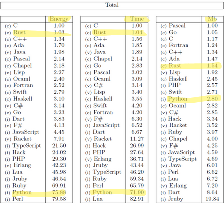
Analyse zur Entscheidung einer geeigneten Technologie für *ADA* gemessen an der Energieeffizienz, der Zeit und der Speichereffizienz.
Die Auswahl zur Programmiersprache Rust für die ADA-Anwendung wird aufgrund der beschränkten Ressourcen einer autark laufenden Applikation, gewählt. Da die Anwendung in der mit Solarenergie betriebenen Blickbox installiert werden soll, ist vor allem die Energieeffizienz ausschlaggebend für die Auswahl.
Die Auswahl zur Programmiersprache C++ für die SARA-Anwendung beruht auf dem bereits vorhandenen und verwendeten Framework Arduino, als auch an den Bibliotheken DHT- und SparkFun_Weather_Meter_Kit_Arduino für die Auslesung der Sensoren. Diese basieren auf C++.
Evaluation zur Wahl der Technologie der API
Für die API wird als Programmiersprache Python verwendet. Python wird aufgrund der einfachkeit, der großen Anzahl an Frameworks und der großen Community verwendet. Die nachfolgende Grafik erläutert die Auswahl des Frameworks.
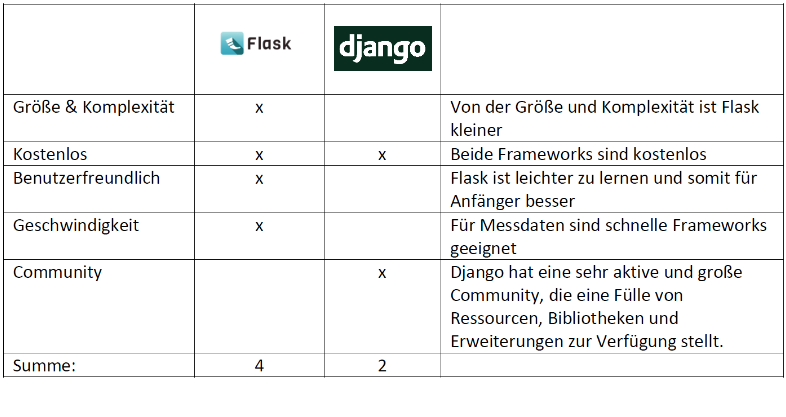
Eine Analyse wurde durchgeführt, um die Entscheidung für das geeignete Framework zur Entwicklung der API zu treffen. Dabei wurden die Vor- und Nachteile von Flask und Django gegenübergestellt und verglichen.
Qualitätsanforderungen
Qualitätsanforderungen im Softwareengineering sind definierte Spezifikationen und Merkmale, die die Qualität eines Softwareprodukts oder -systems bestimmen. Diese Anforderungen umfassen typischerweise Kriterien wie Funktionalität, Leistung, Zuverlässigkeit, Benutzerfreundlichkeit, Wartbarkeit und Sicherheit. Sie dienen dazu, sicherzustellen, dass das entwickelte Softwareprodukt die Bedürfnisse und Erwartungen der Benutzer erfüllt und den spezifizierten Standards und Anforderungen entspricht. Dabei ist es entscheidend, dass die Qualitätsanforderungen während des gesamten Softwareentwicklungsprozesses berücksichtigt werden, angefangen bei der Anforderungsanalyse über das Design, die Implementierung und das Testen bis hin zur Wartung und Aktualisierung des Systems.
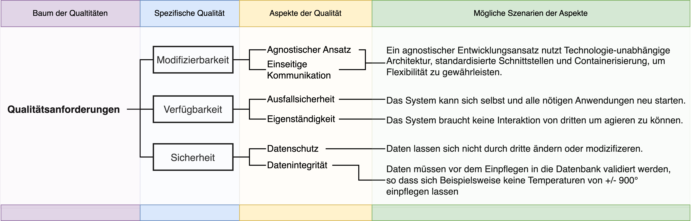
Das vorliegende Diagramm veranschaulicht die Qualitätsanforderungen in Form eines \"Baums der Qualitäten\", wobei spezifische Qualitäten, Aspekte der Qualität und mögliche Szenarien dargestellt sind. Die Struktur des Diagramms zeigt eine hierarchische Darstellung der Qualitätsanforderungen, beginnend mit allgemeinen Qualitätsmerkmalen und sich auf spezifischere Aspekte und Szenarien hinunterbewegend. Jede Ebene des Baumes repräsentiert eine zunehmende Spezifität der Qualitätsanforderungen, wodurch eine klarere und detailliertere Definition der erforderlichen Qualitätsmerkmale erreicht wird.
Risiken und Teschnische Schulden
Risiken
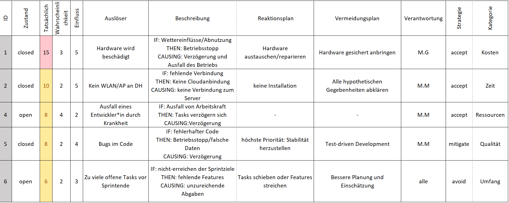
Risiken im Softwareengineering können verschiedene Formen annehmen, darunter technische Herausforderungen wie unvorhergesehene Komplexität in der Implementierung, sowie organisatorische Risiken wie Verzögerungen im Zeitplan.
Technische Schulden

Technische Schulden im Softwareengineering bezeichnen die Konsequenzen von Entscheidungen, die kurzfristig zu schnellern Entwicklungszeiten führen, langfristig jedoch zu erhöhten Wartungskosten, verminderten Leistungen und erschwerten Erweiterungen führen können. Diese Schulden entstehen beispielsweise durch die Verwendung von ineffizienten oder unsauberen Programmierpraktiken, unzureichende Dokumentation, nicht ausreichendes Refactoring oder das Ignorieren von Best Practices während der Entwicklung. Während technische Schulden manchmal bewusst eingegangen werden, um kurzfristige Ziele zu erreichen, ist es wichtig, sie kontinuierlich zu überwachen und zu reduzieren, um die langfristige Gesundheit und Nachhaltigkeit des Softwareprodukts zu gewährleisten.